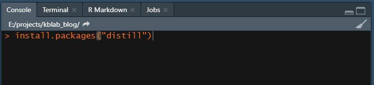
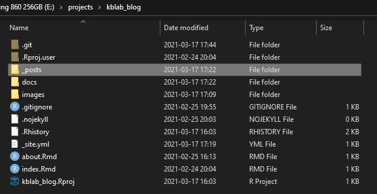
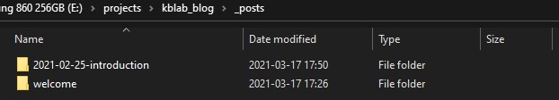
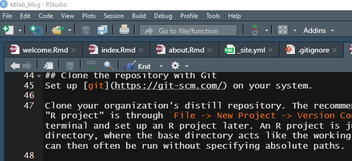
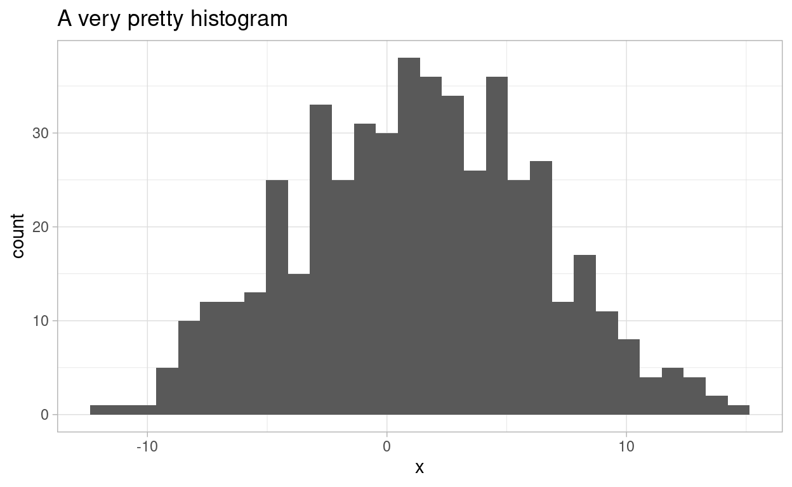

A short introduction showcasing the capabilities of the distill package for scientific and technical writing. Get yourself set up and start publishing posts!
Distill is a publication format for scientific and technical writing, native to the web. You can learn more about using Distill for R Markdown at https://rstudio.github.io/distill. An example of a website built on this package is the RStudio AI Blog. More examples can be found here.
First things first, you will need to download and install R. Secondly, it is highly recommended that you install the RStudio IDE (integrated development environment).
Once you have R and RStudio setup, open the IDE and install the distill package. If you are on Ubuntu, you may need to install the following external dependencies via the terminal first:
Then in the R console inside Rstudio:
install.packages("distill")

Figure 1: Install the distill package in the console pane.
Set up git on your system.
Clone your organization’s distill repository. The recommended simple way of doing this while also setting up an “R project” is through File -> New Project -> Version Control -> Git. However, you can also clone from a terminal and set up an R project later. An R project is just an RStudio specific way of setting up a project directory, where the base directory acts like the working directory. It’s convenient since most function calls can then often be run without specifying absolute paths.
A new blog post can be created by using the create_post() function in the root directory of the project. To create a new post with the title “The Deepest Deeper Deep Learning Methods”, you simply:
library("distill")
create_post("The Deepest Deeper Deep Learning Methods")
This will create a new directory inside of the _posts directory with the name {yyyy_mm_dd}-The-Deepest-Deeper-Deep-Learning-Methods. It will always name the directory after the current date so that your blog posts are sorted chronologically. Inside of this directory you will find a newly generated .Rmd-file named something like thedeepestdeeperdeeplearningmethods.Rmd where the actual content of the post goes.


The pictures above display the appearance of the _posts folder after I created this introductory post. I named it “introduction”. The title of the actual post when it is published does not have to be the same as the given name when creating the post.
Once you’ve created your post and started adding content to it, you can generate the final product for preview or publication by “knitting” it. Knitting is R slang for generating the html/latex/pdf from Rmarkdown. The name comes from the package that does all the heavy lifting in the background (knitr).

Figure 2: Press the Knit button to generate a preview and a publishable html document.
When you click “knit” on your post’s .Rmd-file, it will only render and update the contents related to your own post. While this is fine for generating a preview, ultimately we will also want to re-knit the index.Rmd file in the root directory. This will ensure that the listing of blog articles on the front page gets updated with your post. Do this either by opening index.Rmd and clicking on the “knit” button, or alternatively via
rmarkdown::render_site()
This will only re-render the root-level .Rmd files (index.Rmd and about.Rmd) while leaving the blog articles intact. The reason being that old code frequently breaks due to environment changes and package updates. The only way of updating a blog post is thus by explicitly knitting it!
In your posts you can organize and style the contents using Markdown Syntax. An informative and short reference guide for R Markdown can be found here.
Code can be intermixed with text. We put code in so called code chunks which are preceded and followed by three backticks like so:
```{r, echo=TRUE, eval=FALSE, code_folding=FALSE}
library(ggplot2)
df <- data.frame(x_sample = rnorm(n = 500, mean = 2, sd = 5))
ggplot(data = df, aes(x = x_sample)) +
geom_histogram() +
theme_light() +
labs(x = "x",
title = "A very pretty histogram")
```After the squiggly { bracket you specify the language, which can be for example r, python or bash. Optional chunk options are added afterwards which can control whether the code chunk e.g. is evaluated or not, whether the code and/or the output are displayed, as well as whether the code should be folded by default with an option to expand. Here is how a code chunk will actually be displayed when run properly:
library(ggplot2)
df <- data.frame(x_sample = rnorm(n = 500, mean = 2, sd = 5))
ggplot(data = df, aes(x = x_sample)) +
geom_histogram() +
theme_light() +
labs(x = "x",
title = "A very pretty histogram")

The RStudio IDE has support for both R and Python. Thanks to the reticulate package. By default, R will use the Python interpreter available on your system path. However, you can configure this inside of R with the help of reticulate configuration functions and choose any environment (including virtualenv and conda envs).
To use python, simply:
```{python, echo=TRUE, eval=FALSE, code_folding=FALSE}
# Dictionaries in an R IDE?!?! Amazing!
my_dict = {"a": 5, "b": 9, "c": 4}
my_key = "c"
print(f"The value for '{my_key}' is: {my_dict[my_key]}.")
```When run with echo=TRUE, eval=TRUE (you can remove eval entirely since its default is TRUE) and code_folding=FALSE the above produces the following result:
# Dictionaries in an R IDE?!?! Amazing!
my_dict = {"a": 5, "b": 9, "c": 4}
my_key = "c"
print(f"The value for '{my_key}' is: {my_dict[my_key]}.")The value for 'c' is: 4.A conda Python environment named “pytorch3000” can be activated in the following manner in an R code chunk:
reticulate::use_condaenv("pytorch3000")
However, be careful to ensure this chunk is run before the first time Python is called in your document. Otherwise it will fail to successfully change the Python version from whatever was the system default.
In R Markdown documents we can also directly access data and objects created in one language from the other language. To access python objects from R:
library(reticulate)
paste("The value for", py$my_key, "is:", py$my_dict["c"])
[1] "The value for c is: 4"And correspondingly from Python:
import pandas as pd
df_dict = r.df # is a dictionary in Python: {x_sample: [..., ...]}
df = pd.DataFrame(df_dict)
df.head() x_sample
0 -1.444003
1 -2.346573
2 -5.654136
3 4.709806
4 1.597854